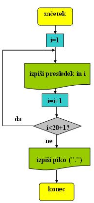
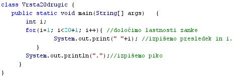
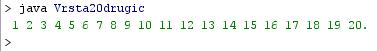

PROGRAMSKI JEZIKI
- Programski jeziki so umetni jeziki, namenjeni posredovanju navodil strojem, najpogosteje raèunalnikom.
- Naloge programskih jezikov:
- izražanje izraèunavanj
- zapisovanje programov, ki natanèno predpisujejo naèine delovanja strojev
- natanèno izražanje algoritmov
- tudi kot naèin komuniciranja med ljudmi
- Raèunalniki in ostali stroji potrebujejo za svoje delovanje zelo zelo natanèna in nedvoumna navodila.
- Pravila za pisanje programskih jezikov morajo biti zato (kolikor je le mogoèe) stroga in jasna.
- Za programske jezike veljajo zelo stroga pravila, ki doloèajo pomene stavkov in ukazov. Ta pravila imenujemo semantièna pravila ali semantika.
- Prav tako veljajo za programske jezika tudi nadvse stroga pravila, ki doloèajo zgradbo stavkov in ukazov. Ta pravila imenujemo sintaktièna pravila ali sintaksa.
- Prvi programski jeziki in programi so nastali še pred raèunalniki.
- Te programske jezike oziroma programe so izdelali za avtomatizirane statve, lajne in pianine, ki so igrali sami od sebe.
- Beseda "program" je sestavljenka.
- Sestavljena je iz dveh besed: "pro" (prej ali vnaprej) in "gram" (zapis, znak).
- Pogram je torej zapis, ki je pripravljen vnaprej ali pred nekim dogodkom.
- Program je torej zapis, ki doloèa, kako bo potekal nek dogodek ali dejavnosti, ki se bodo odvijale kasneje.
- Pri programskih jezikih moramo poznati nekaj pomembnih lastnosti:
- Funkcija oziroma namen: programski jeziki so namenjeni pisanju raèunalniških programov, ki predpisujejo, katere operacije bo raèunalnik izvajal in kako bo izvajal te operacije.
- Naloga: programski jeziki omogoèajo ljudem komuniciranje z raèunalniki in posredovanje navodil raèunalnikom.
- Konstrukti: to so naèini opisovanja, napovedovanja in deklariranja podatkovnih struktur, upravljanja teh podatkovnih struktur ter nadzorovanja poteka izvajanja operacij.
- Jeziki, ki v osnovi niso namenjeni obdelavi podatkov, niso programski jeziki. Tak jezik je denimo oznaèevalni jezik za izdelavo spletnih strani HTML (Hyper Text Markup Language).
Primer:
Besedni opis problema in rešitve.
- "Zapiši po vrsti števila od 1 do 20 v isti vrsti, med njimi pa naj bo en presledek": Vprašamo se, kaj vse bomo morali postoriti za rešitev problema in to opišemo v nekaj stavkih. Potek reševanja problema poskusimo premisliti èim bolj natanèno.
- Ker gre za ponavljanje, bomo izbrali zanko.
- Zaèetna vrednost števca zanke je 1.
- Izpiši presledek in vrednost števca.
- Poveèaj vrednost števca za 1.
- Èe bo števec manjši od 20+1, ponavljaj izpisovanje presledka in števca.
- Èe števec ni manjši od 20+1, prekini zanko in izpiši še piko.
Diagram poteka
- "Zapiši po vrsti števila od 1 do 20 v isti vrsti, med njimi pa naj bo en presledek":

VAJA 38:
- V okolju za pisanje izvorne kode v jeziku Java, za prevajanje in za interaktivno delo zapiši zgornji program "Vrsta20Drugic". Pomagaj si s sliko.
- Kodo lahko tudi kopiraš iz te datoteke in jo prilepiš v okolje, v katerem pišeš programèke. Pozor: koda, ki jo boš kopiral/a, vsebuje eno, dve, tri ali štiri napake. Èe želiš, da bo program deloval, moraš napake odkriti in jih odpraviti.
- Izvorno kodo shrani pod imenom "ImePriimek38.java". ImePriimek je seveda tvoje lastno ime in priimek.
- Datoteko "ImePriimek38.java" prevedi.
- Prevedeno datoteko zaženi, preveri rezultat v interaktivnem oknu in poklièi profesorja, da vidi rezultat.
- Preriši diagram poteka v tej uèni enoti v zvezek.
1. Vprašanja:
1. Kaj so programski jeziki?
2. Naštej štiri naloge programskih jezikov in jh zapiši.
3. Kaj je semantika?
4. Kaj je sintaksa?
5. Zakaj sta semantika in sintaksa potrebni?
6. Razloži pomen besede "program".
7. Naštej in razloži tri pomembne lastnosti programskih jezikov. Zapiši jih.
8. Katero od zank smo uporabili v primeru te uène enote?
9. Katero od zank smo uporabili v primeru prejšnje uène enote?
10. Naštej vse razlike, ki ju opaziš med programom te uène enote in prejšnje uène enote.
11. Naštej vse razlike, ki ju opaziš med diagramom poteka te uène enote in prejšnje uène enote.
2. Zapiši od ene do pet kljuènih besed, ki povzemajo vsebino te uène enote.
3. Povezave do dodatnih informacij.
Angleška verzija Wikipedije.
Spletni priroènik proizvajalca programskega okolja Java. To je podjetje Sun.
|